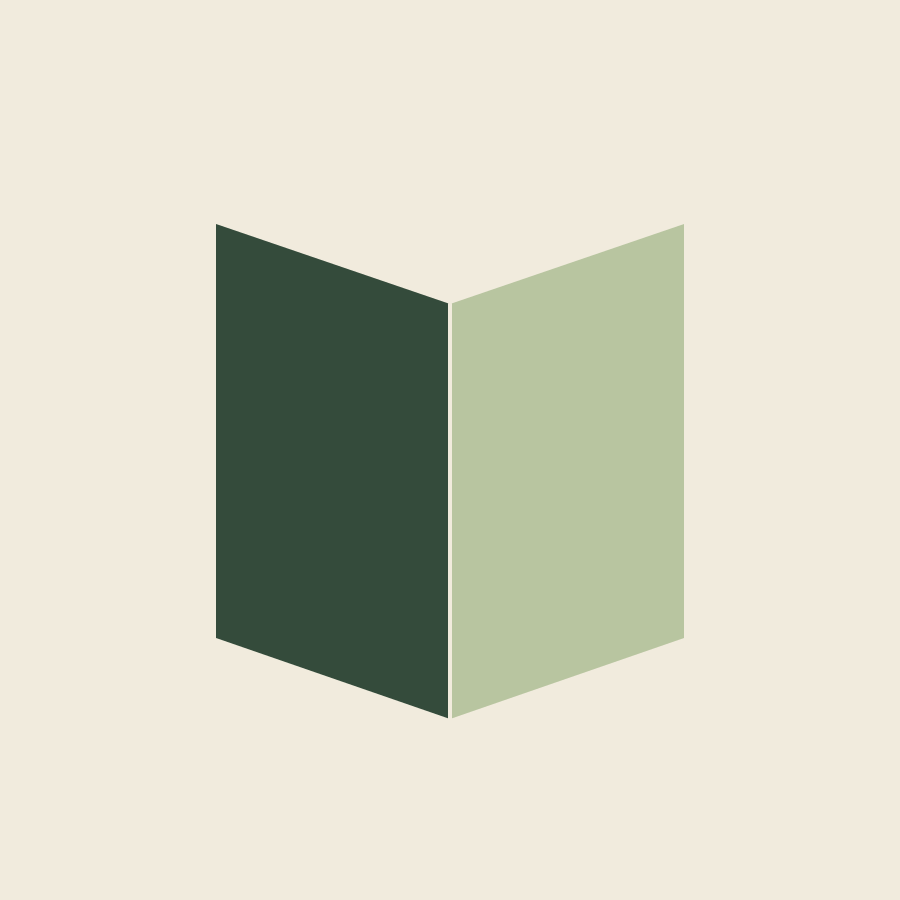
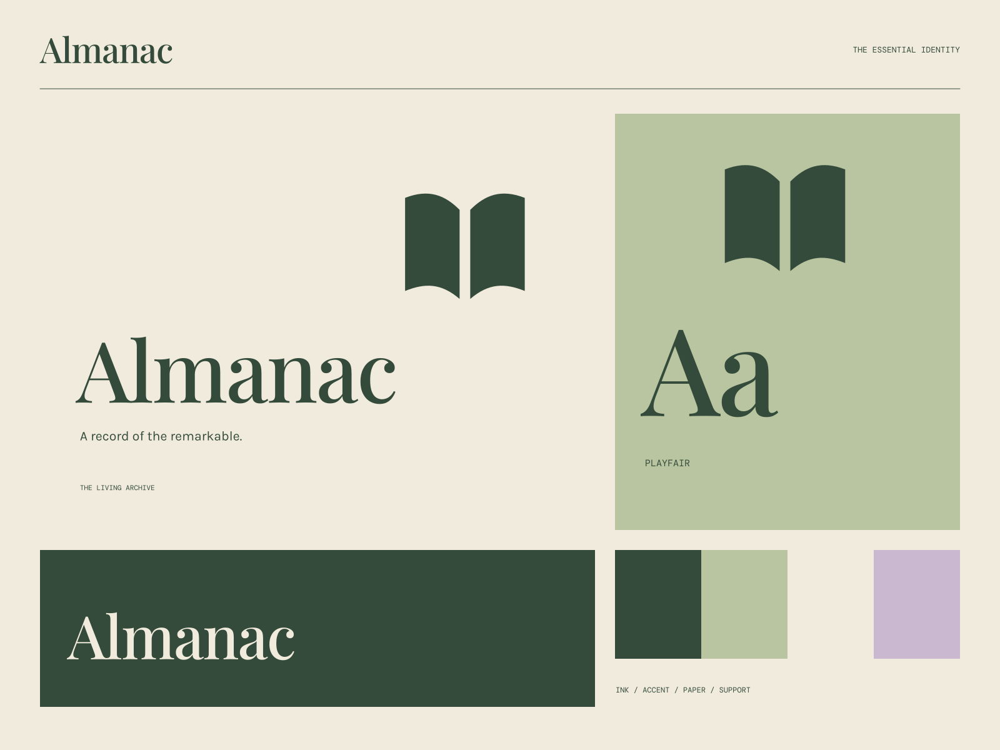

01
Observe the everyday
Thoughtful records of things that can too easily go unnoticed.
CULTURE / NOTES / THE EVERYDAY REMARKABLE
A record of the remarkable. Things worth noticing, kept together.

A coherent little world
Things worth noticing, kept together. A record of the remarkable.
01
Thoughtful records of things that can too easily go unnoticed.
02
A considered archive of people, places, and perspectives.
03
Work with enough care and character to invite another reading.

The point of view
Layered page objects, specimen-like illustrations, chapter rhythms, and richly readable book typography. A contemporary cultural journal that looks worth keeping.